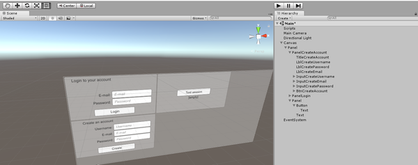
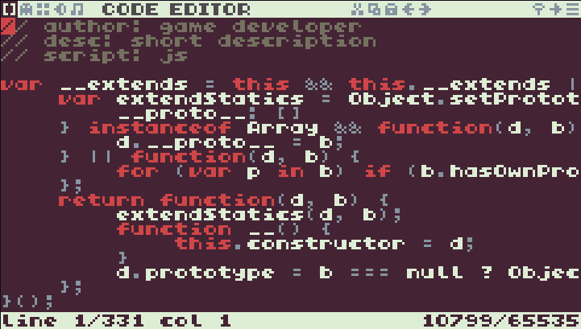

Automatic Deployment of a Static Ghost Blog Ghost is an excellent blogging platform. It's aimed at professionals, its default theme is clean and elegant, as is its admin interface. I've always wanted to ditch Jekyll in favor of Ghost, but
Modernizing ImpactJS - Part 3: Weltmeister Now that we have everything required to run our es6-converted ImpactJS in any browser, there is still a feature that I purposedly left behind: Weltmeister, the (aptly named) map editor. Unlike the other
Modernizing ImpactJS - Part 2: Time for a Brunch! In the previous post, I explained how ImpactJS used modules before modules were a thing, and how I adapted its code for ES6. Despite the fact that ES6 modules are now natively supported
Modernizing ImpactJS - Part 1: The Modules If you were interested in making games for the web between 2010 and 2014, chances are that you landed at least once on the ImpactJS front page. This was (and still is) a
 Make a Sign In Form With Unity and NodeJS Ever dreamed of making your own login form in Unity, to authenticate your users through NodeJS? Good, that's exactly what we're about to do.This post is not aimed at beginners, but will
 Writing TypeScript for the TIC-80 The TIC-80 is a fantasy console (much like the well-known PICO-8, but with less restrictions) that suddenly became a lot more interesting to me with its last update, that allows developers to write